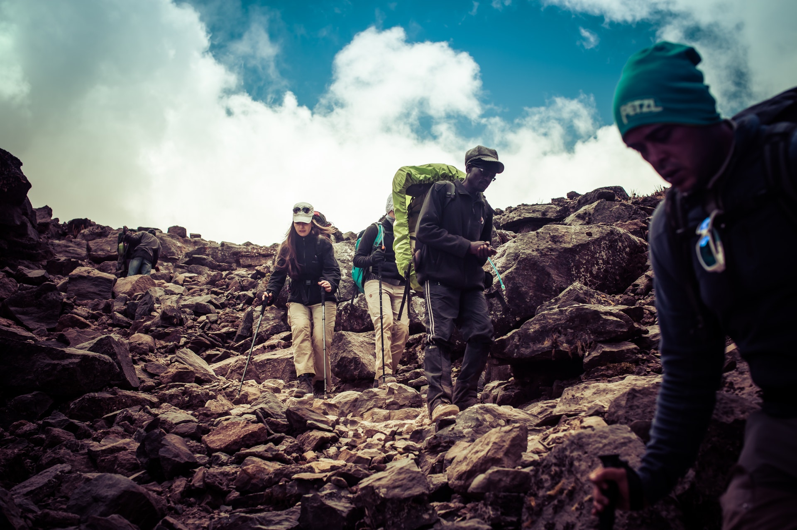
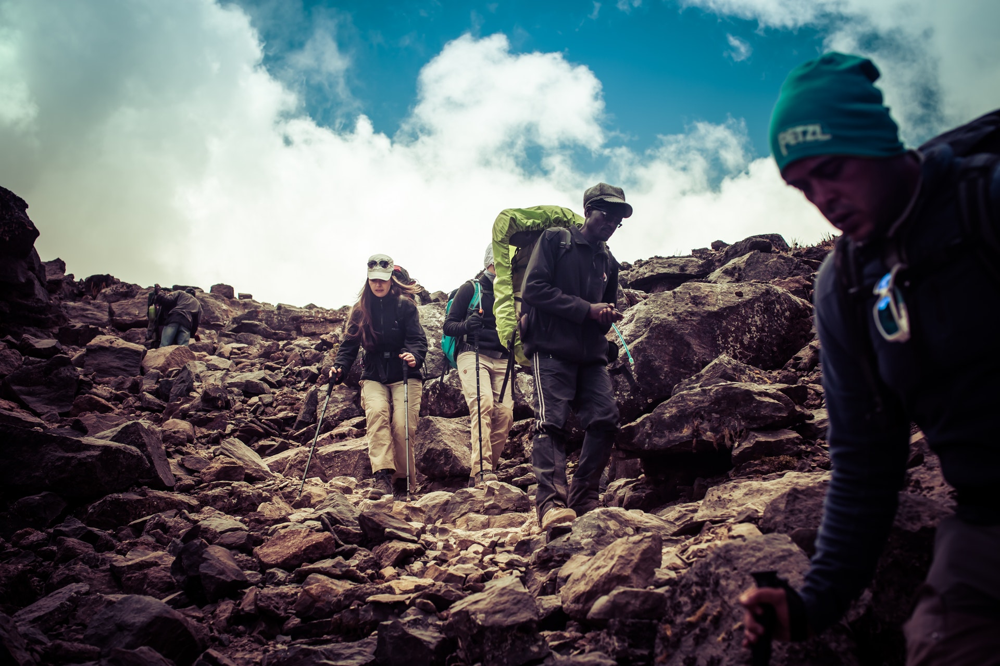
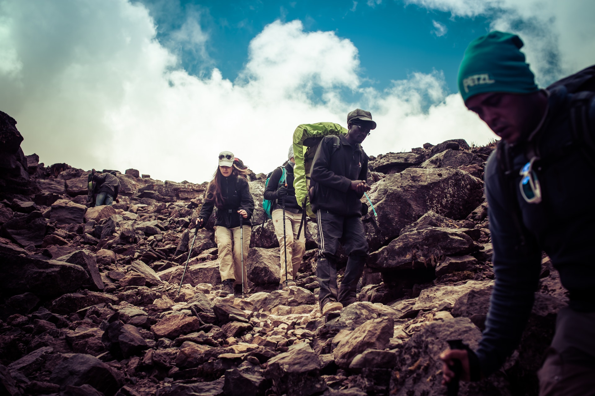

OUTDOOR ADVENTURES

-
AFRICAMPS BOUTIQUE
-
OEWERZICHT COTTAGES
-
CITRUSDAL NATURAL HOTSPRINGS
-
TWEEDE TOL WORCESTER
-
PALMIET-KLEINMOND
Camping
-
SKELETON GORGE
Known for its popularity among locals and tourists, Skeleton Gorge is a scenic trek not rivalled by many. Ideal in dry conditions, this hike is great for both the seasoned and novice hiker. During the summer months you’ll be able to get some shade along the Afromontane forest nearly all the way up Skeleton Gorge. Bear in mind that this hike can get quite strenuous so be prepared to really work those muscles, and take the necessary safety precautions.Number of routes: Two routes
Difficulty: Moderate
-
MAMRE NATURE GARDEN
Situated along the West Coast, in the little town of Mamre, this National Heritage Site has picnic spots, short trails and a 1.5-hour trail walk. The 254ha reserve has an abundance of vegetation and small animals such as caracals and various reptiles. Pack your picnic basket and make a day of it.Number of routes: Two routes
Difficulty: Moderate -
MEADOWRIDGE COMMON
Situated in the heart of the Southern Suburbs of Cape Town, Meadowridge Common is a small protected area of about 8 hectares. The common boasts endangered fynbos, which is indigenous to Cape Town. During September and October you can expect gorgeous floral displays, as well as a number of insects, birds and amphibians – the endangered Cape Rain Frog has also been spotted here. The Common offers a relaxing environment suitable for anyone looking to just enjoy being outside.Number of routes: One route
Difficulty: Easy
-
MACASSAR DUNES CONSERVATION AREA
If you are looking for a place featuring multiple activities, then Macassar Dunes Conservation Area is the place for you. With views extending across False Bay, all the way to Kogelberg and Hangklip, the views are as enticing as the “entertainment”. The latter includes wonderful picnic spots, fishing in designated areas (permit required), hiking, swimming and bird watching.Number of routes: One route
Difficulty: Easy
-
LION’S HEAD
This short summit offers panoramic views of Cape Town and unbeatable sunsets. It’s a popular route to do on nights where there’s a full moon. If you’re relatively fit, you’ll find yourself at the top quite quickly, which is why it’s such a popular after-work hike. There’s a little bit of climbing involved, but there are handholds and chains to help you on your way up and down. You can also take the roundabout way, which skips the climbing part if you are walking with small children or dogs.Number of routes: Two routes
Difficulty: Moderate.
Hiking
-
FRESH WATER FISHING
This is available at Clan William Olifants River. The river is 285km. What you can expect to catch here are Clan William sand fish, Barnard's Klipbaber and Clan William yellow fish. A fishing permit is compulsory and can be obtained at the Cape Nature Reserve. -
BOTLIERSKOP GAME RESERVE
This is located in Mossel Bay. This game reserve works strictly with a catch and release policy. Fish you can expect to see are: Carp, large mouth Bas, blue kurper aand fresh water eels. -
FLY FISHING IN ELGIN VALLEY
This at the Cape Overberg Region and what you could expect to see are rainbow trout. -
DIE PLAAT
This is located in Stanford. While fishing you'll definitely see some school of Dolphins and this place is also famous for Whale watching. -
VAALVLEI FLY FISHING
Located in Stanford.
Fishing
-
BAINSKLOOF ROCK CLIMBING
-
WOLFBERG ROCK CLIMBING
-
CERES, CASTLE ROCKS
-
ELANDS BAY
-
MONTAGU